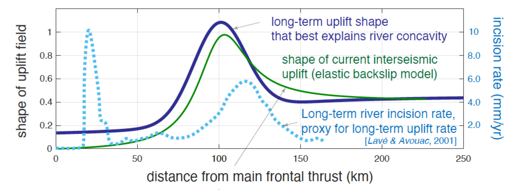
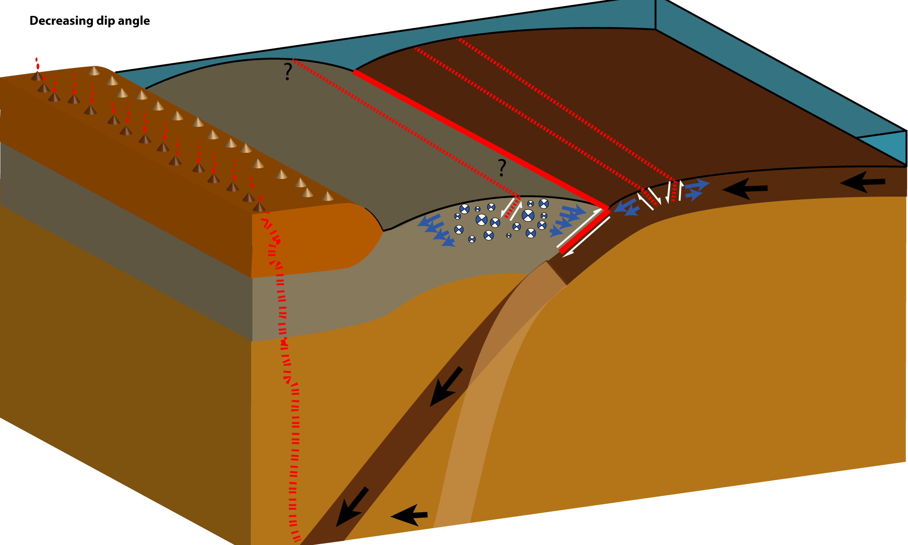
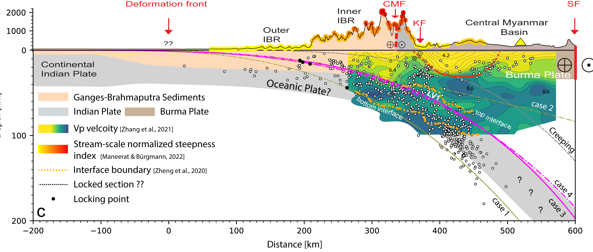
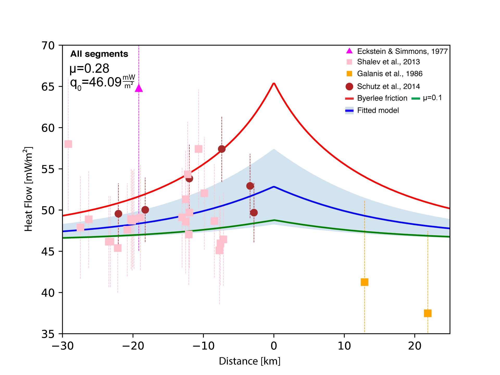

This page is currently being updated, please bear with me...
The strongest most devastating earthquakes ever recorded (e.g., Chile 1960; Alaska 1964; Sumatra 2004; Japan, 2011) occur at subduction zones, regions where two tectonic plates, known as the upper-plate and down-going plate, converge and generate large earthquakes along the main fault, the megathrust. These subduction zones are complicated systems that host a variety of deformation processes operating on different time scales. For example, mantle convection which drives subduction convergence and plate tectonics spans millions of years. On the other end of the spectrum, megathrust earthquakes rupture within seconds to minutes in the coseismic period, relieving stresses that have slowly accumulated over the centuries between great earthquakes — a time interval known as the “interseismic period”.
At the foundation of our understanding of earthquake cycles lies the elastic description of seismic cycles, indicating that permeant deformation is only accumulated along the megathrust with no off fault inelastic deformation. This inherently indicates reversible upper plate deformation, and thus, no long-term displacements should accumulate in the overriding plate over many cycles of loading and unloading. However, numerous observations suggest that the elastic description of earthquake cycles is incomplete. For example, peculiar extensional earthquakes occur in convergent plate boundaries following megathrust earthquakes that generate larger-than-expected tsunamis (Hasegawa et al., 2012;McKenzie & Jackson, 2012). Moreover, recent observations from active margins link forearc long-term inelastic uplift and interseismic elastic deformation (Jolivet. et al. 2020; Madella & Ehlers, 2021; Malatesta et al., 2021), suggesting that a portion of the elastic interseismic energy is translated into permanent forearc deformation. Lastly, the very threshold where faults break and transition from elastic to inelastic behavior has been vigorously debated (e.g., Fulton & Saffer, 2009).
My research combines data analysis and thermomechanical codes to study short (Interseismic, co-seismic etc )- and long-term (Slab dip angle change for example) mechanisms and learn how their interplay can shape the deformation field imparted by earthquake cycles. Here are some of the main themes I study:
How short-term processes affect long-term deformation
How elastic earthquake cycles generate inelastic deformation?
 Recent studies propose that spatial patterns of interseismic (short-term) deformation are reflected in long-term trends of coastal uplift (Jolivet et al., 2020), as well as in the morphology of subduction margins, which is shaped over 100s of kyrs by the interaction of tectonic and surface processes (Malatesta et al., 2021). This suggests that the repetition of seemingly elastic cycles somehow leads to non-recoverable long-term deformation. Using semi-analytical approach, I developed I demonstrate that a small increment of inelastic deformation accumulates during each interseismic phase, leading to a long-term unbalance of co-, post- and interseismic strain. I estimate the permanent surface uplift imparted by this upper plate yielding employing a statistical approach and model frictional yielding of the forearc as incremental slip on a population of small faults whose spatial distribution reflects the fraction of the interseismic phase duration spent at yield. Upon summing the displacements due to each of these dislocations, I estimate the irreversible surface displacement field associated with multiple seismic cycle. I show that this irreversible deformation ultimately amounts to permanent uplift concentrated above the transition from freely slipping to fully coupled megathrust, and is consistent with the geometry and rates of long-term uplift recorded in Chile, Cascadia and Himalayas.
Recent studies propose that spatial patterns of interseismic (short-term) deformation are reflected in long-term trends of coastal uplift (Jolivet et al., 2020), as well as in the morphology of subduction margins, which is shaped over 100s of kyrs by the interaction of tectonic and surface processes (Malatesta et al., 2021). This suggests that the repetition of seemingly elastic cycles somehow leads to non-recoverable long-term deformation. Using semi-analytical approach, I developed I demonstrate that a small increment of inelastic deformation accumulates during each interseismic phase, leading to a long-term unbalance of co-, post- and interseismic strain. I estimate the permanent surface uplift imparted by this upper plate yielding employing a statistical approach and model frictional yielding of the forearc as incremental slip on a population of small faults whose spatial distribution reflects the fraction of the interseismic phase duration spent at yield. Upon summing the displacements due to each of these dislocations, I estimate the irreversible surface displacement field associated with multiple seismic cycle. I show that this irreversible deformation ultimately amounts to permanent uplift concentrated above the transition from freely slipping to fully coupled megathrust, and is consistent with the geometry and rates of long-term uplift recorded in Chile, Cascadia and Himalayas.
Spatial patterns of long-term uplift inferred from geomorphological indexes
Rivers incise topography at rates that strongly depend on local slope. This makes them well suited to encode information relative to the shape of long-term vertical displacements. I devlope a method that leverages the normalized slope-area analysis of river (chi-analysis) to constrain the spatially-varying, long-term uplift function that has shaped a mountainous region. I test this method in structurally-simple rift settings, and recover long-term uplift shapes consistent with standard models of lithospheric flexure prompted by slip on normal faults. I apply it to the Himalayan subduction zone yielding a broad uplift peak ~100 km NE of the Main Frontal Thrust (MFT), consistent with estimates of long-term denudation rates. As several authors previously noted, this pattern resembles that of vertical interseismic displacements along the partially-locked megathrust. Using this method I also search for along-strike variability in long-term uplift, and assess potential correlations with present-day variability in the locking state of the MFT.
How Long-term processes affect short-term deformation
Long-term slab dip reduction linked to short-term extension and tsunami earthquakes
 I studied the unexpected and widespread extensional deformation observed in the upper plate following the Mw9.1 Tōhoku earthquake (oryan & Buck, 2020). In the 6 months following the mainshock nearly 2,000 aftershocks, most of which were extensional, were recorded in the upper plate (McKenzie & Jackson, 2012). Additionally, megathrust slip appeared to be related to co-seismic slip on a major normal splay fault in the upper plate. This co-seismic slip may have contributed to the tsunami’s anomalously large size (Tsuji et al., 2013). Surprisingly, all earthquakes that produce larger than expected tsunamis for their surface magnitude since the 1970s show similar aftershock patterns (McKenzie & Jackson, 2012; Polet & Kanamori, 2000). This special type of earthquake is termed a ‘tsunami earthquake’ (Kanamori, 1972). Through numerical modeling, I showed that the upper plate stress state strongly depends on Myr- scale changes in slab dip. A progressive decrease in slab dip leads to a broad and deep region of extensional stresses due to bending. These stresses are sufficient to cause brittle yielding of a broad, shallow region of the upper plate. As observed in northern Japan following the Tōhoku event, I demonstrated that these extensional stresses are released only after a megathrust earthquake because of the quasi-instantaneous release of compressional stresses. I also showed that the largest modeled extensional stresses occured in a similar location to the major normal fault that was active during the Tōhoku earthquake, which helps explain the anomalously large tsunami size.
Short-term deformation
The seismic hazard associated with the Indo-Burma subduction zone
The Indo-Burma Subduction Zone is a highly oblique subduction system where the Indian plate is converging with the Eurasian plate. How strain is partitioned between the Indo-Burma interface and faults in the upper plate, including the Kabaw Fault, and whether the megathrust is a locked and active zone of convergence that can host great earthquakes are ongoing debates. I used geodetic datasets (mostly small surface displacement recorded during the interseismic period by GNSS stations), structural geology and numerical modeling to understand the motion within the highly oblique Indo-Burma Subduction Zone between Bangladesh and Myanmar. I found the subduction megathrust fault is locked and converging at a rate of ~12 mm/yr, capable of hosting >Mw8 earthquakes in this densely populated region. This is less than previous estimates because we found that the Kabaw Fault in Myanmar is also active, accommodating strike-slip motion at a rate of ~7 mm/yr and convergence at a rate of ~10 mm/yr. This identifies a previously unrecognized seismic hazard associated with the Kabaw Fault.
Long-term processes
Constraining the strength of the Dead Sea Fault using heat flow data
The strength of faults was vigorously debated for years, but lately a growing number of studies suggest that faults are weaker than originally suggested. Nonetheless, only a handful of natural faults have been studied in detail, and only one, the San Andreas, is a strike-slip fault. I reanalyze (Oryan & Savage, 2021) surface heat flow measurements taken in the proximity of the Dead Sea Transform fault to study how countless earthquake cycles diffuse heat thourgh frictional heating and evaluate the strength of the fault. To account for large terrain relief, and the presence of salt diapirs, I apply 3-D terrain and salt diapir corrections. Based on these corrected heat flow values I estimate that the long-term frictional resistance of the Dead Sea fault is ~0.25. This low value is similar to friction estimates from the San Andreas fault and several subduction zones.